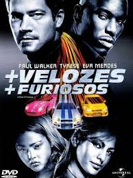
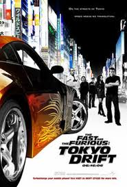
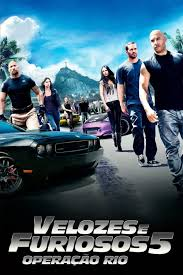
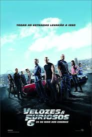
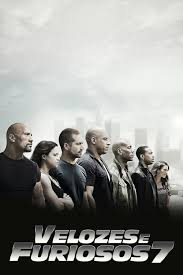
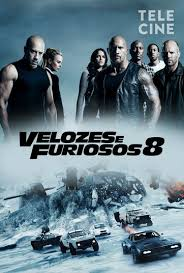

SEJA BEM-VINDO
velozez e furiosos 1

O policial Brian O'Conner se infiltra no mundo das corridas ilegais de rua em Los Angeles para investigar uma série de roubos de caminhões. Durante a missão, ele se aproxima de Dominic Toretto, líder de um grupo de corredores muito respeitado. Com o tempo, Brian ganha a confiança do grupo, se envolve nas corridas e começa a se apaixonar por Mia Toretto, irmã de Dom. Enquanto tenta descobrir quem está por trás dos crimes, Brian passa a admirar Dom e seu estilo de vida, ficando dividido entre cumprir sua missão como policial ou proteger os novos amigos que fez naquele mundo.
+velozes e +furiosos

depois do primeiro filme, Brian O'Conner vai para Miami, onde continua participando de corridas ilegais. Ele é preso pela polícia, mas recebe uma chance de limpar seu nome ajudando em uma missão secreta. Brian então chama seu antigo amigo Roman Pearce para trabalhar com ele. Os dois precisam se infiltrar no esquema do criminoso Carter Verone, que usa pilotos para transportar dinheiro ilegal. Durante a missão, eles participam de várias corridas e tarefas perigosas para ganhar a confiança de Verone, até conseguirem ajudar a polícia a prendê-lo no final.
Velozes & Furiosos: Desafio em Tóquio

filme conta a história de Sean Boswell, um jovem que se mete em problemas por participar de corridas ilegais. Para evitar punições maiores, ele é enviado para morar com seu pai em Tokyo. Lá ele conhece o mundo do drift, um tipo de corrida em que os carros derrapam nas curvas. Sean faz amizade com Han Lue, que o ajuda a aprender a dirigir melhor. Porém ele entra em rivalidade com Takashi, conhecido como o “Rei do Drift”. No final, Sean desafia Takashi em uma corrida decisiva para provar que se tornou um grande piloto.
Velozes e Furiosos 4

O filme (Velozes e Furiosos 4) mostra Dominic Toretto vivendo como fugitivo até descobrir que sua namorada Letty morreu durante uma missão ligada a criminosos. Ele volta aos Estados Unidos para investigar o que aconteceu. Ao mesmo tempo, Brian O’Conner, agora agente do FBI, está investigando o traficante Braga. Os dois acabam se encontrando novamente e, mesmo com conflitos do passado, decidem trabalhar juntos para chegar até o criminoso. Para isso, participam de corridas perigosas usadas para transportar drogas pela fronteira. No final, eles conseguem capturar Braga, mas Dom acaba sendo preso por causa dos crimes que cometeu no passado.
velozes e furiosos 5

Fast & Furious 5 mostra Dominic Toretto sendo resgatado da prisão por Brian O'Conner e Mia Toretto. Eles fogem para o Rio de Janeiro, onde acabam se envolvendo com o criminoso Hernan Reyes. Para se livrar dele e ganhar dinheiro, Dom reúne uma equipe de pilotos e planeja roubar 100 milhões de dólares guardados em um cofre de Reyes. Enquanto isso, o agente federal Luke Hobbs chega para capturar o grupo. No final, eles realizam um plano ousado: arrastam o cofre gigante pelas ruas com carros, conseguem enganar Reyes e fogem com o dinheiro, dividindo a fortuna entre a equipe
VELOZES E FURIOSOS 6

Fast & Furious 6 mostra Dominic Toretto e sua equipe vivendo tranquilos depois do grande roubo no Rio de Janeiro. O agente Luke Hobbs pede ajuda para capturar um criminoso perigoso chamado Owen Shaw. Dom aceita porque descobre que Letty Ortiz, que ele achava que estava morta, está viva e trabalhando com Shaw. A equipe enfrenta o grupo de Shaw em várias perseguições e lutas. No final, eles derrotam Shaw e ajudam Letty a recuperar sua memória. Depois disso, todos recebem perdão pelos crimes e podem voltar para os United States
VELOZES E FURIOSOS 7

Furious 7 mostra Dominic Toretto e sua equipe sendo perseguidos por Deckard Shaw, que quer vingança porque seu irmão Owen Shaw foi derrotado no filme anterior. Ao mesmo tempo, um agente chamado Mr. Nobody pede ajuda para recuperar um programa de rastreamento chamado God’s Eye. Em troca, ele ajuda a equipe a encontrar Shaw. Depois de várias missões e perseguições, a equipe derrota Deckard Shaw. No final, Brian O'Conner decide parar com a vida perigosa para cuidar da família, em uma despedida emocionante.
VELOZES E FURIOSOS 8

The Fate of the Furious começa com Dominic Toretto vivendo tranquilamente com Letty Ortiz. Porém, ele é ameaçado pela hacker criminosa Cipher, que o obriga a trabalhar para ela. Dom então passa a agir contra sua própria equipe. Luke Hobbs, Letty e o resto do grupo ficam confusos e tentam impedir os planos de Cipher. Para conseguir derrotá-la, eles acabam até se unindo ao antigo inimigo Deckard Shaw. No final, é revelado que Cipher estava usando o filho de Dom para obrigá-lo a obedecer. A equipe consegue salvar o bebê, derrotar Cipher e Dom volta a lutar ao lado da sua família.
VELOZES E FURIOSOS 9

F9 mostra Dominic Toretto vivendo tranquilo com sua família, até descobrir que seu irmão perdido, Jakob Toretto, está trabalhando com a criminosa Cipher. Jakob tenta conseguir um dispositivo tecnológico muito poderoso que pode controlar armas no mundo todo. Então Dom, Letty Ortiz, Roman Pearce e o resto da equipe saem em uma missão para impedir o plano. Depois de várias perseguições e lutas, Dom enfrenta seu próprio irmão. No final, Jakob ajuda Dom a derrotar Cipher e foge para começar uma nova vida. A equipe vence e continua unida como uma família. 🚗💨
VELOZES E FURIOSOS

Fast X mostra Dominic Toretto e sua equipe enfrentando um novo inimigo: Dante Reyes, filho do antigo vilão Hernan Reyes, que quer vingança pelo que aconteceu em Fast Five. Dante passa anos planejando destruir a vida de Dom. Ele cria armadilhas, separa a equipe e coloca todos em perigo, inclusive o filho de Dom. Enquanto isso, Letty Ortiz e Cipher acabam presas juntas e precisam se unir para sobreviver. No final, acontecem várias perseguições e lutas em diferentes países. Dom tenta proteger sua família enquanto Dante continua seu plano de vingança. O filme termina com a história em aberto, preparando a continuação da saga